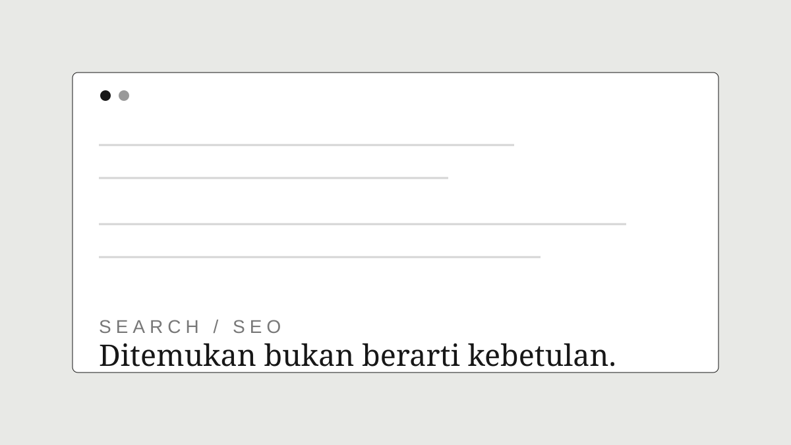
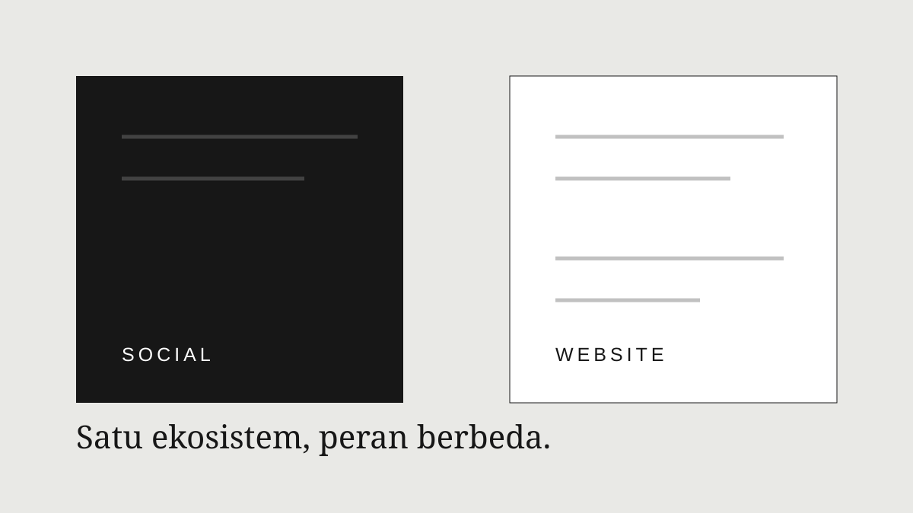
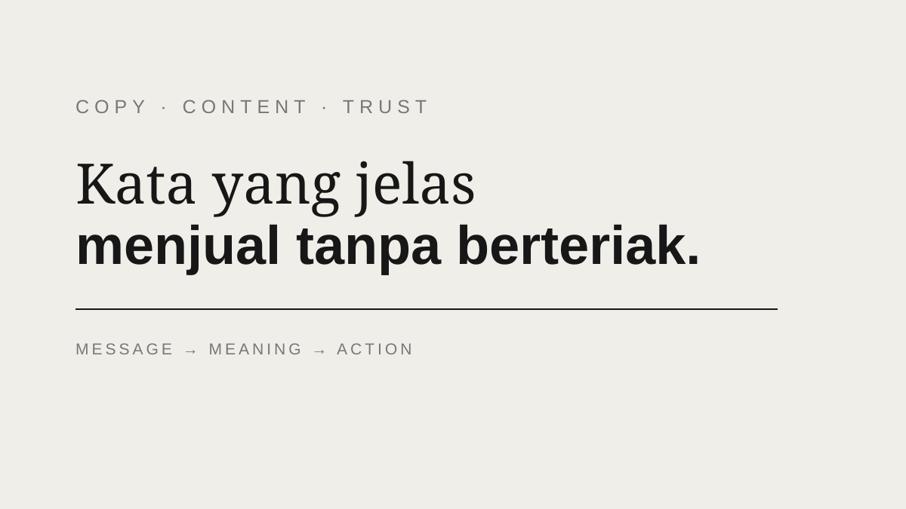

Belajar digital dengan cara yang masuk akal.
Tulisan original untuk pemilik bisnis yang ingin memahami website, SEO, konten, conversion, dan strategi digital tanpa bahasa yang terlalu rumit.
 PILIHAN · 7 MENIT BACA
PILIHAN · 7 MENIT BACAPunya website, kok belum ada pelanggan?
Website adalah fondasi digital, bukan mesin pelanggan otomatis. Pahami bagaimana tujuan, traffic, penawaran, trust, conversion, dan follow-up saling terhubung.
Baca blog ↗
SEO · 7 MENIT BACAWebsite Sudah Online, tetapi Tidak Muncul di Google?
Memahami indexing, search intent, struktur halaman, konten, dan proses SEO.
Baca selengkapnya ↗ CONVERSION · 8 MENIT BACA
CONVERSION · 8 MENIT BACABanyak Pengunjung, Sedikit yang Menghubungi?
Cek tujuh titik yang sering membuat pengunjung ragu sebelum menghubungi bisnis.
Baca selengkapnya ↗
STRATEGI · 6 MENIT BACAWebsite atau Media Sosial: Perlu yang Mana?
Pahami peran masing-masing kanal dan bagaimana keduanya bisa bekerja bersama.
Baca selengkapnya ↗
COPYWRITING · 6 MENIT BACAWebsite Bagus, tetapi Pesannya Masih Kabur?
Susun copy yang jelas, natural, persuasif, dan tetap profesional.
Baca selengkapnya ↗Tidak ada artikel yang cocok. Coba kata kunci lain.
Konten ini dibuat untuk membantu Anda mengambil keputusan.
Bali Bagus Dev tidak akan menganggap semua bisnis membutuhkan solusi yang sama. Beberapa cukup dengan template, sebagian perlu website custom, dan sebagian lagi baru membutuhkan SEO, content, atau sistem yang lebih khusus. Artikel-artikel di sini dirancang untuk membantu Anda memahami perbedaannya sebelum membeli atau membangun sesuatu.